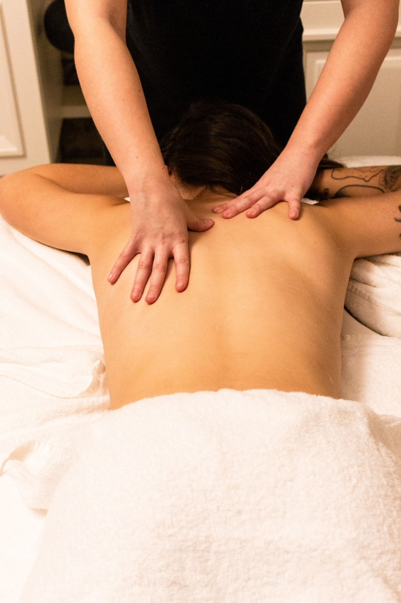

為長者/產後/保持健康的族群們而設計的溫和身體照護方式
立即線上預約淋巴按摩是一種溫和、非侵入式的身體照護手法， 透過輕柔且有節奏的觸碰，支持身體循環與放鬆。 本服務不涉及深層肌肉操作，也不屬於醫療行為， 特別適合需要被細心照顧的族群。
| 比較項目 | 一般按摩 | 淋巴按摩 |
|---|---|---|
| 主要目的 | 緩解肌肉痠痛、筋膜放鬆 | 支持身體循環與免疫系統 |
| 作用系統 | 肌肉與筋膜系統 | 淋巴與循環系統 |
| 按摩方式 | 深層按壓、肌痛點或強力手法 | 輕柔節奏式引導 |
| 身體感受 | 可能痠痛或有壓力感 | 溫和放鬆、幾乎無疼痛 |
| 適合族群 | 肌肉緊繃或運動族群 | 幾乎所有人、產後、長者、壓力族群 |
| 身體影響 | 局部肌肉放鬆 | 全身循環與代謝支持 |
| 整體效果 | 短期肌肉舒緩 | 長期循環平衡與身體調整 |
淋巴按摩屬於支持性身體照護，並非醫療行為。
我們專注於女性身體循環支持， 從個人照護延伸至機構合作， 包含產後護理、熟齡族群與身心課程整合。
本服務以「個人按摩」與「機構合作」為主要模式， 可依個人或機構需求設計定期或試行方案。 所有服務皆清楚界定為支持性照護， 並尊重個人與機構既有流程與照護規範。
提供老人院、產後護理中心與瑜伽空間 客製化循環支持課程與定期合作方案。
請填寫以下表單，我將與您確認合適時段。
前往預約表單若貴機構希望了解合作方式或試行安排， 歡迎透過以下方式聯絡。
聯絡我討論合作